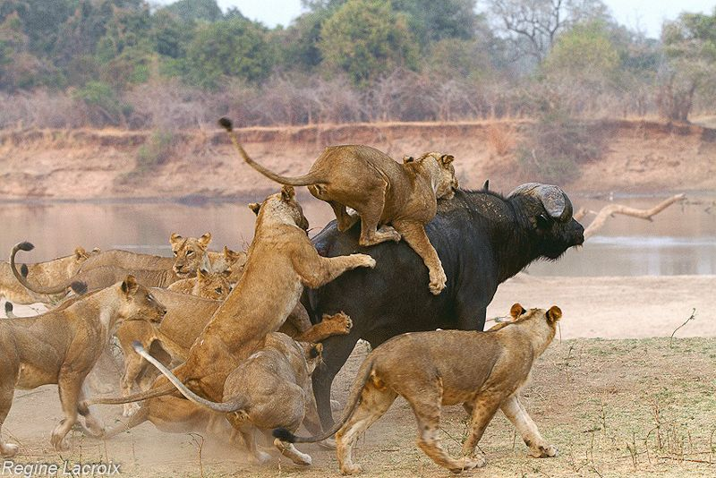
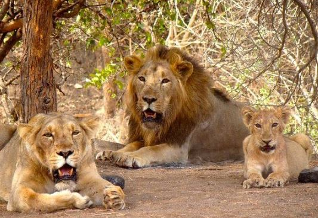

The lion is a very large cat with a long body, large head, and very short legs. Size and apperance varies considerably among sexes.
The males are characterized by the mane which varies between individuals and populations.
It may be absent; it may fringe the face; or it may be full and shaggy, covering the back of the head, neck and shoulders. In some lions, the mane are very dark, giving the beast a majestic apperance. Manes make the cat look larger and may serve to intimidate rivals or impress prospective mates. The female, or lioness, are generally smaller with a body length of 1.5metres, a shoulder height of 0.9-1.1metres,and a weight of 120-180kg.Lions generally live in groups called prides. A pride may consist of several lionesses and few breeding males and their cubs. The group may consist of 4-37 members, but 15 is usually the average size.Each pride has a well-defined territory that is strictly defended against intruding lions and a fringe area where some overlap may be tolerated.
Lions mark their territories by roaring, urinating or defecating across claimed niches. This serves to wade off potential invaders. The roar is usually delivered in the evenings before the night's hunting and again before getting up at dawn.
Majority of the lionesses in the pride are related, and the young female cubs typically stay with the group as they age. The young males later leave and establish their own pride by taking over a group headed by another male.
The females are the prides lead hunters. They often work together to prey upon antelopes, zebras, wildebeest and other large animals. Female lions often raise their cubs communally. After the hunt, the group settles to share the kill with the males eating first, followed by the females and then the young. The young lions do not join the hunting until they are about a year old.
Lions sometimes hunt alone when there is opportunity and might occasionally steal kills from hyena's and other wild beast.
 